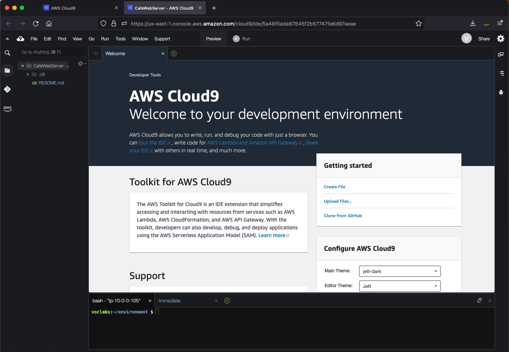

模块 4 - 挑战实验：为咖啡馆创建动态网站
场景
在咖啡馆推出首个网站版本后，有客户向咖啡馆的工作人员反馈称网站做得非常棒。不过，除了好评之外，还有一些客户经常询问是否能线上下单。
Sofía、Nikhil、Frank 和 Martha 一起讨论了这个问题，他们一致认为，业务战略和决策应以客户的满意度和最佳服务体验为侧重点。
实验概览与目标
在本实验中，您将在 Amazon Elastic Compute Cloud (Amazon EC2) 实例上部署一个应用程序。咖啡馆可以利用此应用程序接受线上订单。在测试表明该应用程序在第一个 AWS 区域（即开发环境）中运行正常后，您将从 EC2 实例创建亚马逊云机器镜像 (AMI)。您还将在另一个 AWS 区域中部署相同应用程序的第二个实例，以此作为生产环境。
完成本实验后，您应当能够：
连接到现有 EC2 实例上的 AWS Cloud9 IDE
分析 EC2 实例环境并确认 Web 服务器可访问性
在使用 AWS Systems Manager Parameter Store 的 EC2 实例上安装 Web 应用程序
测试 Web 应用程序
创建 AMI
将 Web 应用程序的第二个副本部署到另一个 AWS 区域
在实验开始时，已在 AWS 账户中为您创建一些资源：

在本实验结束时，您的架构应与以下示例类似：

时长
完成本实验大约需要 60 分钟。
AWS 服务限制
在本实验环境中，对 AWS 服务和服务操作的访问权限可能仅限于完成实验说明所需的服务和操作。如果您尝试访问其他服务，或者执行不是本实验中所述的操作，则可能会遇到错误。
访问 AWS 管理控制台
在本说明上方，选择 Start Lab（开始实验）启动实验。
随即会打开 Start Lab（开始实验）面板，其中显示实验状态。
提示：如果您需要更多时间完成计时器上显示的实验，请再次选择 Start Lab（开始实验）按钮以重新启动环境的计时器。这样做不会删除您创建的资源。
等到您看到 Lab status: ready（实验状态：就绪）消息后，选择 X 关闭 Start Lab（开始实验）面板。
在本说明上方，选择 AWS。
随即会在新的浏览器标签页中打开 AWS 管理控制台。您将自动登录系统。
提示：如果未打开新的浏览器标签页，浏览器顶部通常会显示一个横幅或图标，并附带一条消息，提示浏览器阻止该网站打开弹出窗口。选择此横幅或图标，然后选择 Allow pop-ups（允许弹出窗口）。
排列 AWS 管理控制台标签页，使其与本说明并排显示。理想情况下，您将同时打开这两个浏览器标签页，从而更轻松地执行实验步骤。
咖啡馆的业务请求：准备 EC2 实例来托管网站（挑战 1）
咖啡馆希望为客户推出线上下单服务，同时咖啡馆的工作人员能够查看提交的订单。当前的网站架构（网站托管在 Amazon S3 上）无法满足新的业务要求。
在本实验的第一部分中，您将扮演 Sofía 的角色。您将配置 Amazon EC2 实例，为托管咖啡馆网站做好准备。
任务 1：分析现有 EC2 实例
在本任务中，您将记下有关在 AWS 账户中为您创建的现有 EC2 实例的详细信息。
在 Services（服务）旁边的搜索框中，搜索并选择 EC2，转到 EC2 控制台。然后，选择 Instances（实例）。
请注意名为 aws-cloud9-CafeWebServer-... 的运行实例。此 EC2 实例是实验开始时创建的。

回答有关实例的问题
在实验结束时，选择 Submit（提交）按钮即可评估答案。
查看本实验中的问题。
选择 Details（详细信息）菜单，然后选择 Show（显示）。
选择页面底部显示的 Access the multiple choice questions（查看多选题）链接。
在加载的页面中，回答前四个问题：
问题 1：实例是否在公有子网中？
问题 2：是否为 EC2 实例分配了 IPv4 公有 IP 地址？
问题 3：为此实例开放了哪些入站 TCP 端口号？
问题 4：EC2 实例是否有关联的 AWS Identity and Access Management (IAM) 角色？
注意：在浏览器标签页中将问题网页保持打开状态。稍后您将在本实验中返回到该网页。
任务 2：连接到 EC2 实例上的 IDE
AWS Cloud9 是可以在 EC2 实例上运行的服务。它提供了一个集成开发环境 (IDE, Integrated Development Environment)，其中包括代码编辑器、调试器和终端等功能。
通过使用 AWS Cloud9 环境，您无需下载密钥对并使用 PuTTY 或类似的 Secure Shell (SSH) 软件连接到 EC2 实例。通过使用 AWS Cloud9，您也无需使用命令行文本编辑工具（如 vi 或 nano）编辑 Linux 实例上的文件。
在 Services（服务）旁边的搜索框中，搜索并选择 Cloud9，转到 AWS Cloud9 控制台。
在 Environments（环境）页面中，请注意 CafeWebServer 环境。这表明其类型为 EC2 instance（EC2 实例）。
选择 Open（打开）。
现在，您已连接到在之前看到的 EC2 实例上运行的 AWS Cloud9 IDE。
此 IDE 包括：
右下面板中的 Bash 终端。
左面板中的文件浏览器，其中显示实例上
/home/ec2-user/environment目录中的文件。右上面板中的文件编辑器。如果在文件浏览器中双击某个文件（如 README.md 文件），此文件将显示在编辑器中。

任务 3：分析 LAMP 堆栈环境并确认 Web 服务器可访问
回想一下，本挑战实验的目标是配置 EC2 实例用于托管咖啡馆的新动态网站。在本任务中，您将对已安装的内容进行分析。
查看操作系统版本。
在 AWS Cloud9 Bash 终端中，运行以下命令：
cat /proc/version请注意输出中指示为 Amazon Linux 实例的信息，大致类似于 Red Hat 7。
查看 Web 服务器、数据库和 PHP 详细信息以及服务器状态。
在终端中，运行以下命令：
sudo httpd -vservice httpd statusmysql --versionservice mysqld statusphp --version输出应显示 Web 服务器和数据库的版本，并且还显示它们当前未运行。
启动 Web 服务器和数据库，并将其设置为在任何将来的 EC2 实例重新启动后自动启动。
在终端中，运行以下命令：
sudo chkconfig httpd onsudo service httpd startsudo service httpd statussudo chkconfig mysqld onsudo service mysqld startsudo service mysqld status
配置 EC2 实例，以便使用 AWS Cloud9 编辑器编辑 Web 服务器文件。
请注意，AWS Cloud9 文件浏览器当前不显示 Apache Web 服务器的默认 Web 目录。
在终端中，运行以下两个命令：
ln -s /var/www/ /home/ec2-user/environmentsudo chown ec2-user:ec2-user /var/www/html您运行的第一个命令创建了从默认 AWS Cloud9 编辑器工作区到包含 Web 服务器文件的
/var/www目录的符号链接。第二个命令更改了 html 子目录的所有权，以便 ec2-user（您的登录身份）能够在其中编辑和新建文件。
创建简单测试网页。
在文件浏览器中，展开 CafeWebServer > www 目录，然后突出显示 html 目录。
选择 File（文件）> New File（新建文件）。
在文本编辑器标签页中，粘贴以下行：
<html>Hello from the café web server!</html>选择 File（文件）> Save（保存），然后在 html 目录中将文件另存为 index.html。
将网站设置为可以通过互联网访问。
在此步骤中，您将需要验证并更新配置，使得可以通过互联网访问 Web 服务器上托管的网页。
以下是一些入门提示：
提示 1（单击以展开）
查找 EC2 实例的 IPv4 公有 IP 地址，然后尝试在新的浏览器标签页中加载 `http://<public-ip>`。是否在浏览器中加载您在 index.html 中输入的消息？
提示 2（单击以展开）
要允许 TCP 端口 80 上来自任何位置的入站 HTTP 流量，请根据需要更新 EC2 实例的安全组。
新业务要求：在 EC2 实例上安装动态网站应用程序（挑战 2）
在上一个挑战中，您配置了 EC2 实例。您现在知道，PHP 已安装，并且应用程序环境具有正在运行的关系数据库。该环境具有一个运行的 Web 服务器，可以从互联网进行访问。您现已完成托管咖啡馆动态网站的基本设置。
在本实验的第二部分中，您将扮演 Sofía 的角色，并在 EC2 实例上安装咖啡馆应用程序。
任务 4：安装咖啡馆应用程序
下载并提取 Web 服务器应用程序文件。
在 Bash 终端中，运行以下命令：
cd ~/environmentwget https://aws-tc-largeobjects.s3-us-west-2.amazonaws.com/ILT-TF-200-ACACAD-20-EN/mod4-challenge/setup.tar.gztar -zxvf setup.tar.gzwget https://aws-tc-largeobjects.s3-us-west-2.amazonaws.com/ILT-TF-200-ACACAD-20-EN/mod4-challenge/db.tar.gztar -zxvf db.tar.gzwget https://aws-tc-largeobjects.s3-us-west-2.amazonaws.com/ILT-TF-200-ACACAD-20-EN/mod4-challenge/cafe.tar.gztar -zxvf cafe.tar.gz请注意文件浏览器如何显示您下载的三个 .tar.gz 文件。
您还提取了这些归档文件，它们在工作环境中创建了
cafe、db和setup目录。
将咖啡馆文件复制到 Web 服务器文档根目录中。
在 Bash 终端中，运行以下命令：
mv cafe /var/www/html/
查看应用程序的设计工作方式。
在 AWS Cloud9 编辑器中双击
html/cafe/index.php源代码将其打开。请注意，此文件包含 HTML 代码，但它还包含 <?php... ? > 元素中的部分。这些元素将调用其他系统和资源。
例如，在第 18 行中，您会看到 PHP 代码引用了名为 getAppParameters.php 的文件。
在代码编辑器中打开 getAppParameters.php 文件。
请注意，在此文件的第 3 行中，调用了 AWSSDK。
此外，在第 10 行到第 33 行中，Web 应用程序创建了一个客户端，该客户端连接到 ssm 服务（即 AWS Systems Manager）。之后，此应用程序从 Systems Manager 中检索 7 个参数。尚未在 AWS Systems Manager 中创建这些参数，接下来您将执行此操作。
在 AWS Systems Manager Parameter Store 中，配置应用程序参数。
在 Bash 终端中，运行以下命令：
xxxxxxxxxxcd setup./set-app-parameters.sh刚运行的 Shell 脚本发出了 AWS Command Line Interface (AWS CLI) 命令。这些命令将应用程序即将使用的参数添加到了 Parameter Store 中。
从 AWS 管理控制台的 Services（服务）菜单中，选择 Systems Manager。
从左侧面板中，选择 Parameter Store。
请注意，这里存储了 7 个参数。
咖啡馆应用程序的 PHP 代码引用了这些值（比如说，用于检索 MySQL 数据库的连接信息）。
选择
/cafe/dbPassword参数，并将 Value（值）复制到剪贴板。您稍后将使用此值。
配置 MySQL 数据库，为咖啡馆应用程序提供支持。
返回到 AWS Cloud9 Bash 终端，然后运行以下命令：
xxxxxxxxxxcd ../db/./set-root-password.sh./create-db.sh
查看创建的数据库表。
在 Bash 终端中，运行此命令以将基于终端的 MySQL 客户端连接到数据库：
xxxxxxxxxxmysql -u root -p在提示您输入数据库密码时，请粘贴您复制的 dbPassword 参数值。
此时将显示一条
mysql>提示，指示您现已连接到此 EC2 实例上运行的 MySQL 数据库。

要查看数据库的内容（具体是指支持咖啡馆 Web 应用程序的表），请输入以下命令：
xxxxxxxxxxshow databases;use cafe_db;show tables;select * from product;exit;
更新 PHP 中的时区配置。
在 Bash 终端中，运行以下命令：
xxxxxxxxxxsudo sed -i "2i date.timezone = \"America/New_York\" " /etc/php.inisudo service httpd restart您运行的第一个命令在 PHP 软件中配置了时区。
您运行的第二个命令重新启动了 Web 服务器，以便 Web 服务器发现配置更新。
测试咖啡馆网站是否正常运行且可从互联网进行访问。
在新的浏览器标签页中，尝试在
http://<public-ip>/cafe中加载应用程序，其中 <public-ip> 是 EC2 实例的 IPv4 公有 IP 地址。您会看到仅加载网站的标题横幅。网页的其余部分无法正常加载。
解决与网站相关的问题。
在此步骤中，您需要探索如何让咖啡馆网站正常运行。
以下是正常运行的内容的列表：
http://<public-ip>/ 上的测试页面成功加载，从而确认 Web 服务器正常运行且可从互联网进行访问
您还知道 MySQL 数据库正在运行，并且包含可支持应用程序的表和数据
问题出在哪里？
提示 1（单击以展开）
编写的 PHP 代码是正确的。问题与权限相关。提示 2（单击以展开）
Web 应用程序是否依赖于 Web 服务器和数据库以外的任何其他服务或资源？例如，它是否需要访问其他 AWS 服务？提示 3（单击以展开）
转到 IAM 服务并搜索名为 CafeRole 的 IAM 角色。查看此角色授予的权限。将这些权限授予 EC2 实例是否会有所帮助？如何为咖啡馆 Web 应用程序授予这些权限？提示 4（单击以展开）
在 Amazon EC2 控制台中选择 EC2 实例，并查看 Actions（操作）菜单中的选项。是否任何操作有助于解决此问题？
在您认为已修复问题后，重新加载 http://<public-ip>/cafe 页面。页面是否已完全加载并显示了咖啡馆菜单项？如果是这样的话，那么恭喜您！
注意：如果仍无法解决问题，您可以尝试运行实验说明末尾的 Submitting your work（提交作业）部分中的评分脚本。生成的提交报告可以为未成功完成的实验部分提供额外的提示。您可以根据需要多次提交作业 - 仅保留您在上次提交时获得的分数。
任务 5：测试 Web 应用程序
通过下单进行测试。
在已打开
http://<public-ip>/cafe页面的浏览器标签页中，选择 Menu（菜单）。为至少一个显示的菜单项提交订单。
注意：您可能需要向下滚动才能找到 Submit Order（提交订单）按钮。
返回到菜单页面，再下一个订单，然后转到 Order History（订单历史记录）页面，查看所有订单的详细信息。
新业务要求：在不同的 AWS 区域创建开发和生产网站（挑战 3）

咖啡馆的每个人都对 Sofía 创建的新动态网站惊叹不已！客户非常高兴，因为现在不但能够线上下单，还能安排甜点的提货时间。这缩短了客户的等待时间，因而提高了客户满意度。
但除了给予赞誉之外，另一个业务要求也随之出现。Martha 和 Frank 想为咖啡馆创建两个网站：
一个网站可用作开发环境，以便在向客户发布新功能和 Web 设计之前进行模拟测试
另一个网站将托管供客户使用的生产环境
一天早上，Sofía 在 Mateo 来咖啡馆喝咖啡时与他讨论了这个新要求。他建议，这两个环境最好位于不同的 AWS 区域中。这样设计还有一个额外的益处，即当 AWS 区域暂时不可用时提供稳健的灾难恢复 (DR, Disaster Recovery)。
Sofía 现在非常忙！她完成了更多的出色工作，这也让她的技能变得更受欢迎。
任务 6：创建 AMI 并启动另一个 EC2 实例
由于咖啡馆网站已基于现有 EC2 实例良好运行，因此，Sofía 决定通过创建 AMI 来复制它。之后，她将从新 AMI 启动一个新实例。
在本任务中，您将继续扮演 Sofía 的角色。在此实例中创建 AMI 之前，您应创建新的密钥对，这对于本实验后面的部分可能很重要。
设置静态内部主机名，并在 EC2 实例上创建新密钥对。
在 Bash 终端中，运行以下命令：
xxxxxxxxxxsudo hostname cafeserverssh-keygen -t rsa -f ~/.ssh/id_rsa在两次提示您输入密码时，请按 Enter 键。
要使新密钥可用于 SSH 实用程序，请在 Bash 终端中运行以下命令：
xxxxxxxxxxcat ~/.ssh/id_rsa.pub >> ~/.ssh/authorized_keys
在 AWS 管理控制台中，浏览到 EC2 服务区域并选择实例。
依次选择 Actions > Images and templates > Create Image（操作 > 映像和模板 > 创建映像）。
提示：在回答一些有关 AMI 的问题时，在浏览器标签页中将 Create Image（创建映像）对话框保持打开状态。
回答有关 AMI 的问题
在实验结束时，选择蓝色 Submit（提交）按钮即可记录答案。
返回到包含本实验的问题的浏览器标签页。您之前已访问本实验。
如果您需要再次找到页面，请：
选择 Details（详细信息）菜单，然后选择 Show（显示）。
选择页面底部显示的 Access the multiple choice questions（查看多选题）链接。
在页面中，提交以下问题的答案：
问题 5：从实例中创建 AMI 时，是否会重启此实例？
问题 6：从实例中创建 AMI 时，可以通过哪些方法修改根卷属性？
问题 7：如果 AMI 是从仅包含一个卷的实例中创建的，能否为 AMI 添加更多卷？
返回到 AWS 管理控制台，在 Create Image（创建映像）界面中创建新的 AMI：
Image name（映像名称）：
CafeServer选择 Create image（创建映像）
从导航菜单中，选择 AMI 并等待映像状态变为 Available（可用）。此过程通常需要大约 2 分钟。您可能需要展开 Images（映像）以查找 AMI。
在另一个 AWS 区域中创建 AMI。
在此步骤中，您的目标是从刚刚捕获的 AMI 中创建新的 EC2 实例。不过，您必须在俄勒冈 (us-west-2) AWS 区域中创建新的实例。
提示 1（单击以展开）
复制您刚创建的映像的 AMI ID。然后，尝试在 us-west-2 区域中找到此实例。提示 2（单击以展开）
该账户级别是否存在 AMI？提示 3（单击以展开）
选择您在 AWS 区域中创建的 AMI。接下来，选择 Actions（操作）菜单。能否通过某种操作让 AMI 在美国西部（俄勒冈）区域中可用？继续并选择适当的操作。启动后，操作最多可能需要 5 分钟才能完成。不定期地选择刷新图标可更快地了解操作的完成时间。
通过您的 AMI 创建新的咖啡馆实例。您创建的新实例必须符合以下条件。
Region（区域）：
OregonInstance Size（实例大小）：
t2.smallNetwork（网络）：
Lab VPC Region 2、Public SubnetIAM Role（IAM 角色）：
CafeRoleTag（标签）：
Key（键）：
NameValue（值）：
ProdCafeServer
Security Group（安全组）：
创建名为 cafeSG 的新安全组，并向所有位置开放 TCP 端口 22
设置 TCP 端口 80，以便向所有位置开放此端口
Proceed without a key pair（继续操作但不提供密钥对）（如有必要，可以使用您在本实验前面创建的密钥对连接到此实例）
等待为新实例分配 Public DNS（公有 DNS）值，即使实例状态仍然不是 Available（可用）。
复制 Public DNS（公有 DNS）值。您将很快会用到此值。
要在新的 AWS 区域中创建所需的 AWS Systems Manager 参数，请完成以下步骤。
返回到 N. Virginia (us-east-1)（弗吉尼亚北部 (us-east-1)）区域中的 AWS Cloud9 IDE。
在文本编辑器中打开 CafeWebServer/setup/set-app-parameters.sh 文件。
编辑文件的第 12 行以匹配以下设置：
xxxxxxxxxxregion="us-west-2"编辑第 18 行以匹配以下设置（其中，<public-dns-of-ProdCafeServer-instance> 是 ProdCafeServer 实例的实际 DNS）：
xxxxxxxxxxpublicDNS="<public-dns-of-ProdCafeServer-instance>"
注意：此行应该还会包含引号，但不应包含尖括号 (< >)。
xxxxxxxxxx此示例显示第 12 行的外观以及第 18 行的格式。但是，公有 DNS 值会有所不同。

选择 File > Save（文件 > 保存），保存更改。
要运行此脚本，请转到 IDE 顶部并选择 Run（运行）按钮。
在文本编辑器下面的 Bash 终端中，您应看到采用 JavaScript 对象表示法 (JSON, JavaScript Object Notation) 进行格式化的输出。此输出指示参数脚本已成功运行。
如果脚本遇到问题，请单击此处以查看问题排查提示。
如果命令输出指示凭证已过期，请尝试在 Bash 终端中运行以下命令（然后再次运行 set-app-parameters.sh）：wget https://aws-tc-largeobjects.s3-us-west-2.amazonaws.com/ILT-TF-200-ACACAD-20-EN/mod4-challenge/cred-update.shchmod +x cred-update.sh./cred-update.sh
注意：通过更改 AWS 区域详细信息并再次运行此脚本，您创建了之前在 AWS Systems Manager Parameter Store 的 us-east-1 区域中创建的相同参数，只不过这次是在俄勒冈区域中创建的。
任务 7：验证新的咖啡馆实例
返回到 EC2 控制台中的 Oregon（俄勒冈）区域，然后验证新的 ProdCafeServer 实例是否正在运行。
复制 IPv4 公有 IP 地址，并将其加载到 Web 浏览器中。
随即会显示 Hello from the cafe web server!（欢迎访问咖啡馆 Web 服务器！）消息。
在浏览器标签页中加载
http://<public-ip>/cafe/URL。随即会显示整个咖啡馆网站。
加载 Menu（菜单）页面。
随即会加载整个 Menu（菜单）页面，并且下单功能应正常运行。
下单以验证网站是否正常运行。
问题排查提示（如果在加载 Menu（菜单）页面时未遇到任何问题，请跳过此步骤）。
评分脚本可以为未成功完成的实验部分提供额外的提示。您可以根据需要多次提交作业 - 仅保留您在上次提交时获得的分数。
此外，如果您需要连接到俄勒冈 (us-west-2) 中的新 EC2 实例以排查一些问题，请从 us-east-1 的 AWS Cloud9 IDE 中运行以下命令：
xxxxxxxxxxssh -i ~/.ssh/id_rsa ec2-user@<public-ip-of-ProdCafeServer>请注意，<public-ip-of-ProdCafeServer> 是 ProdCafeServer 实例的实际公有 IP 地址。
咖啡馆更新

Sofía 现在成了咖啡馆的名人！她创建了动态网站，并且还创建了同一网站的复制版本，以便在第二个 AWS 区域中运行。
Sofía 决定将她创建的第一个 EC2 实例（us-east-1 区域中的实例）指定为开发实例。她创建的第二个实例（俄勒冈 (us-west-2) 区域中的实例）是生产实例。
这样一来，Sofía 和任何其他应用程序开发人员都可以在开发站点上测试应用程序增强功能，而不会影响生产站点。之后，在开发人员确定增强功能正常，并进行过全面测试时，可以将代码迁移到生产站点。
Sofía 向她的父母 Frank 和 Martha 描述了一下她所做的工作。虽然父母无法完全理解 Sofía 所提到的所有技术术语，但都为网站现在能够接受线上订单而开心不已。听到现在网站的新增强功能可以在面向客户开放前进行测试，他们非常高兴。
提交作业
在本说明上方，选择 Submit（提交）记录您的进度，并在出现提示时选择 Yes（是）。
如果在几分钟后未显示结果，请返回到本说明上方，然后选择 Grades（成绩）。
提示：您可以多次提交作业。在更改作业后，再次选择 Submit（提交）。您最后一次提交的作业将记为本实验内容的作业。
要查找有关您的作业的详细反馈，请选择 Details（详细信息），然后选择 View Submission Report（查看提交报告）。
实验完成
恭喜！您已完成本实验。
要确认您希望结束实验，请选择此页面顶部的 End Lab（结束实验），然后选择 Yes（是）。
应显示一个面板，其中包含以下消息：DELETE has been initiated... You may close this message box now.（已启动删除...您现在可以关闭此消息框）。
要关闭面板，请选择右上角的 X。
©2023 Amazon Web Services, Inc. 和其联属公司。保留所有权利。未经 Amazon Web Services, Inc. 事先书面许可，不得复制或转载本文的部分或全部内容。禁止因商业目的复制、出借或出售本文。